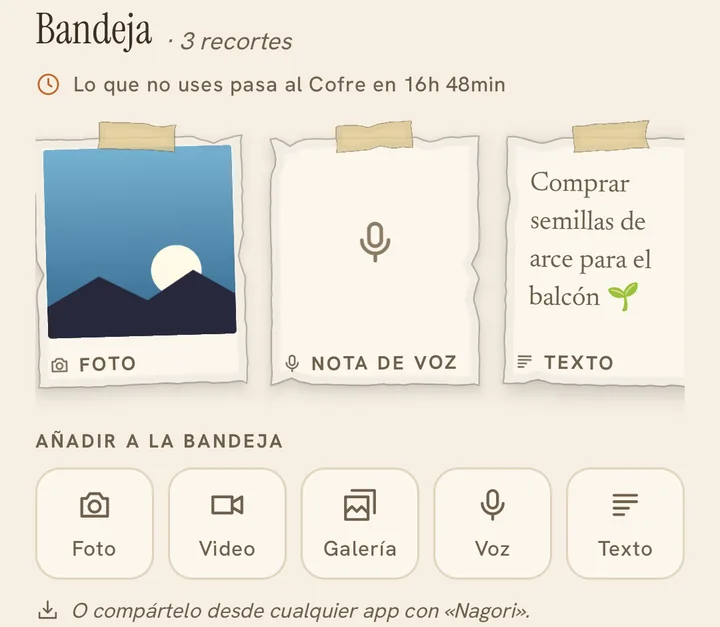
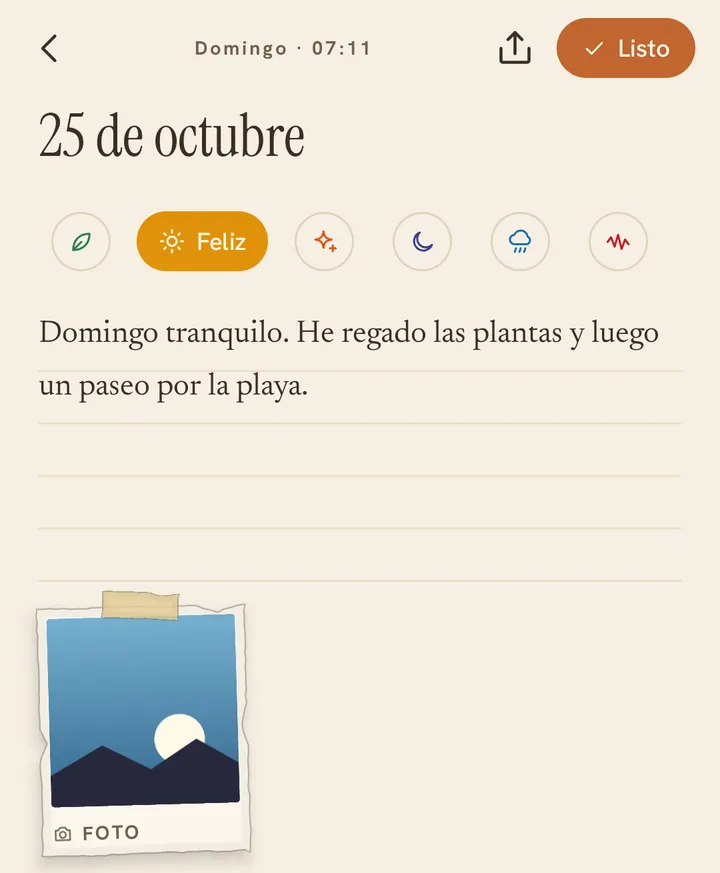
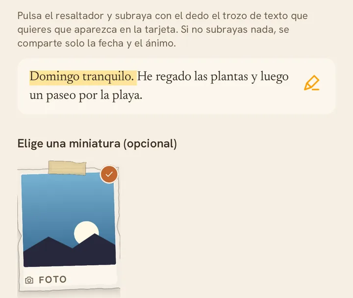
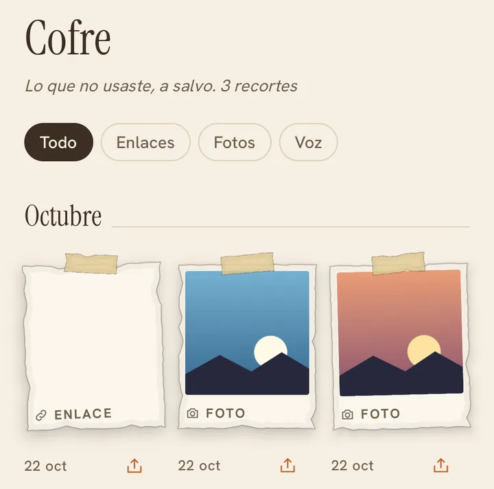
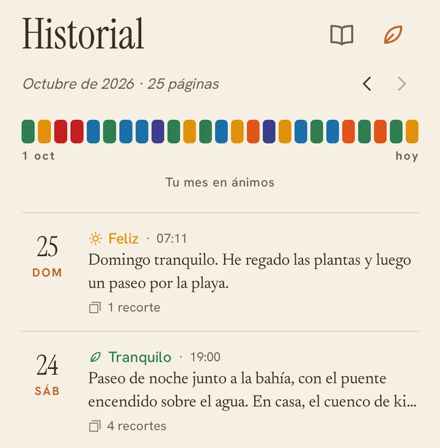
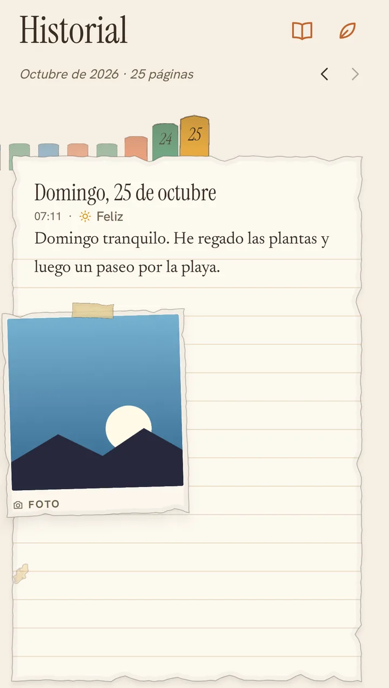
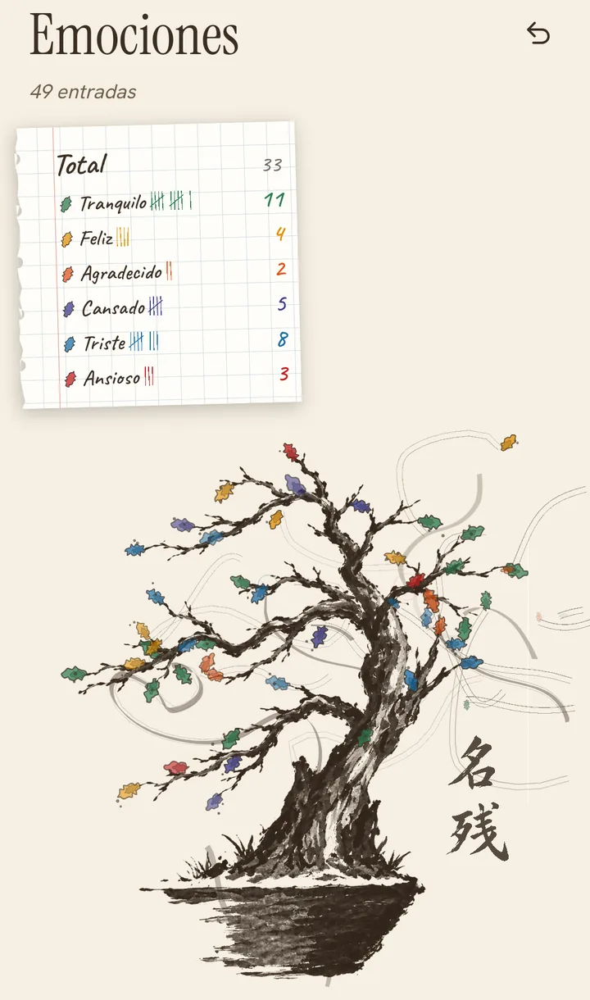
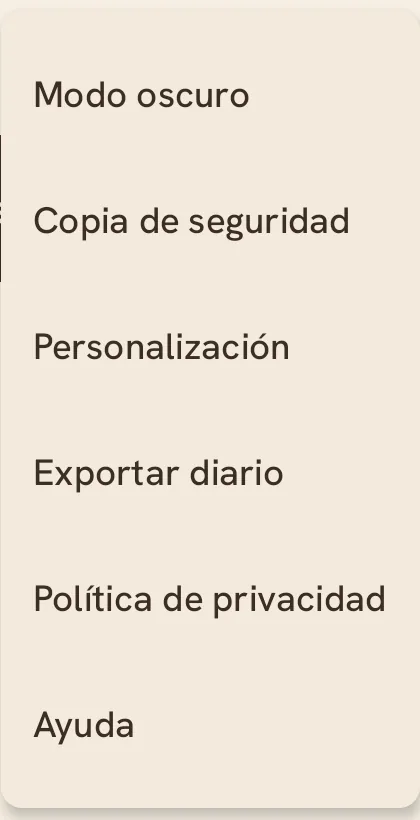
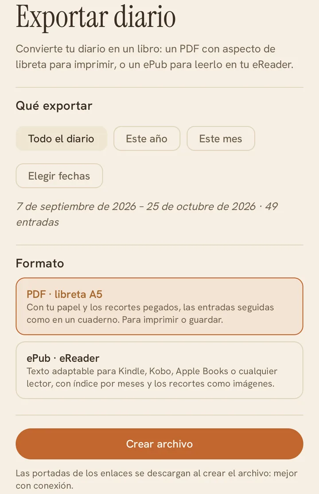

Ayuda
Cómo funciona Nagori
Nagori es un diario de una página al día. Durante el día vas guardando recortes en la bandeja y, cuando te sientas a escribir, los pegas en tu página junto a lo que sentiste.
Hoy y la bandeja
La bandeja es donde caen las cosas del día antes de escribir: fotos, vídeos, notas de voz, textos breves y enlaces.
- Añádelas con los botones Foto, Video, Galería, Voz o Texto.
- O compártelas desde cualquier app (Instagram, TikTok, Spotify, el navegador…) eligiendo «Nagori».
- Toca un recorte para verlo o abrirlo; mantenlo pulsado para borrarlo.
- Lo que no pegues en tu página pasa al Cofre a medianoche: el reloj te dice cuánto falta.

Escribir la página de hoy
Pulsa «Escribir la página de hoy» para abrir tu página.
- Arriba eliges cómo te sientes: tranquilo, feliz, agradecido, cansado, triste o ansioso.
- Escribe sobre las líneas. Se guarda solo mientras escribes, no hace falta darle a nada.
- Abajo, «De tu bandeja» muestra los recortes sin pegar: toca + para pegarlos en la página.
- Para despegar un recorte, mantenlo pulsado y elige Borrar: vuelve a la bandeja.
- «Listo» cierra la página; puedes volver a ella cuando quieras.

Compartir una página
Con el botón de compartir de la página creas una tarjeta para tus redes.
- Pulsa el resaltador y subraya con el dedo la frase que quieres citar. Si no subrayas nada, se comparte solo la fecha y el ánimo.
- Elige, si quieres, un recorte como miniatura.
- En la vista previa puedes pellizcar la miniatura para agrandarla, girarla y arrastrarla.
- Al final eliges dónde publicarla: Instagram, Facebook, Threads, el estado de WhatsApp u otra app.

El Cofre
Aquí se guarda lo que no usaste, ordenado por meses. Nada se borra solo.
- Filtra por enlaces, fotos o voz con los botones de arriba.
- Pulsa la flecha bajo un recorte para traerlo de vuelta a la bandeja de hoy.
- De vez en cuando, Nagori te recuerda algo que guardaste hace tiempo por si hoy te dice algo.

Historial
Todas tus páginas, mes a mes.
- La franja de colores es tu mes en ánimos: un color por día.
- Cambia de mes con las flechas o deslizando el dedo hacia los lados.
- Toca una página para leerla, editarla o compartirla; mantenla pulsada para borrarla.
- Los botones de arriba abren el modo libreta y el bonsái de emociones.

Modo libreta
Nagori Pro
Hojea tu diario como un cuaderno de verdad, con tu papel y los recortes pegados.
- Desliza el dedo para pasar de hoja.
- Las lengüetas de colores te llevan directamente a cada día.
- Gira el móvil para leerla en horizontal.
- Vuelve a pulsar el botón del libro para regresar a la lista.

Bonsái de emociones
Nagori Pro
Cada página con un ánimo hace crecer una hoja de su color en tu bonsái. Con el tiempo, el árbol cuenta cómo has estado.
- La hoja de papel de arriba lleva la cuenta de cada ánimo.
- Ábrelo desde el botón de la hoja en Historial.

Ajustes
Toca Ajustes en la barra de abajo para abrir el menú:
- Modo oscuro: claro, oscuro o según el sistema.
- Copia de seguridad: guarda tu diario en tu Google Drive.
- Personalización: paleta de ánimos, textura del papel e icono de la app.
- Exportar diario: conviértelo en un PDF o un ePub.
- Política de privacidad y la ayuda.

Exportar tu diario
Nagori Pro
Convierte tu diario en un libro.
- Elige qué exportar: todo, este año, este mes o unas fechas concretas.
- PDF: una libreta A5 con tu papel y los recortes pegados, para imprimir o guardar.
- ePub: para leerlo en Kindle, Kobo, Apple Books o cualquier lector.
- Cuando esté listo, guárdalo, compártelo o imprímelo.

Copia en la nube
En Ajustes → Copia de seguridad puedes activar la copia automática en tu Google Drive. Se guarda en una carpeta privada que solo usa Nagori y que no verás en tu Drive normal.
- Se actualiza al abrir la app y poco después de cada cambio.
- «Hacer copia ahora» la fuerza en el momento.
- «Restaurar desde Drive» recupera la última copia en este móvil.
Preguntas frecuentes
¿Dónde se guardan mis datos?
Solo en tu móvil, dentro del espacio privado de la app. Si activas la copia de seguridad, también en una carpeta oculta de tu propio Google Drive. Nunca pasan por servidores de Nagori. Más detalles en la política de privacidad.
¿Qué pasa con lo que no uso de la bandeja?
A medianoche pasa al Cofre, donde se queda guardado sin caducar. Desde allí puedes traerlo a la bandeja de hoy cuando quieras.
¿Cómo guardo algo desde otra app?
Usa el botón de compartir de esa app (Instagram, TikTok, Spotify, la galería, el navegador…) y elige «Nagori». Aparecerá en la bandeja de hoy.
¿Puedo escribir o cambiar un día pasado?
Puedes editar cualquier página que ya tengas: ábrela desde Historial y pulsa Editar. Las páginas nuevas siempre son del día de hoy.
¿Cómo borro una página o un recorte?
Mantén pulsado sobre él y elige Borrar. Al borrar una página se borran el texto y el ánimo, pero sus recortes no se pierden: quedan sueltos en la bandeja o en el Cofre.
¿Por qué un enlace no muestra imagen?
Algunas webs no ofrecen portada, o el post se ha borrado o es privado. También hace falta conexión para descargarla. El enlace sigue guardado y se abre igual al tocarlo.
¿Cuánto puede ocupar una nota de texto?
Hasta 280 caracteres: lo justo para una idea o una frase. Para lo largo está tu página del día.
¿Cómo paso mi diario a un móvil nuevo?
En el móvil antiguo, activa la copia de seguridad y pulsa «Hacer copia ahora». En el nuevo, instala Nagori, ve a Ajustes → Copia de seguridad → «Restaurar desde Drive» con la misma cuenta de Google y reinicia la app.
¿Cómo activo el modo oscuro?
En Ajustes → Modo oscuro. Puedes dejarlo siempre claro, siempre oscuro o que siga al sistema.
¿Qué incluye Nagori Pro?
El modo libreta, el bonsái de emociones, la exportación a PDF y ePub, y la personalización: paletas de ánimo, texturas de papel e iconos de la app. Todo lo demás es gratis y sin límites.
¿Nagori tiene anuncios o me rastrea?
No. No hay publicidad ni herramientas de analítica o seguimiento, y tus datos no se comparten ni se venden.
¿Sigues con dudas?
Escribe a contacto.nagori@gmail.com y te respondemos.